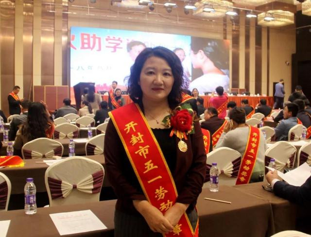
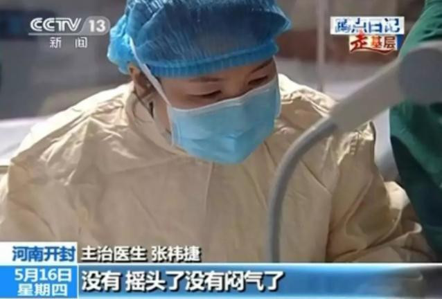
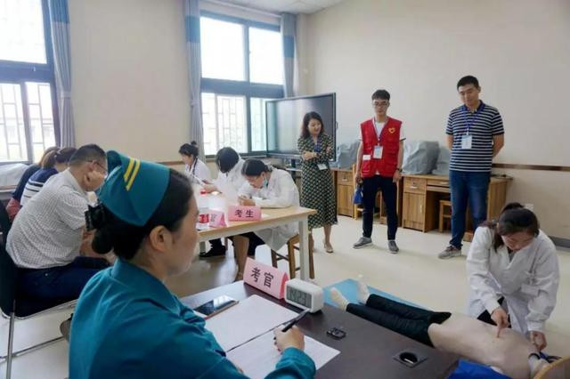
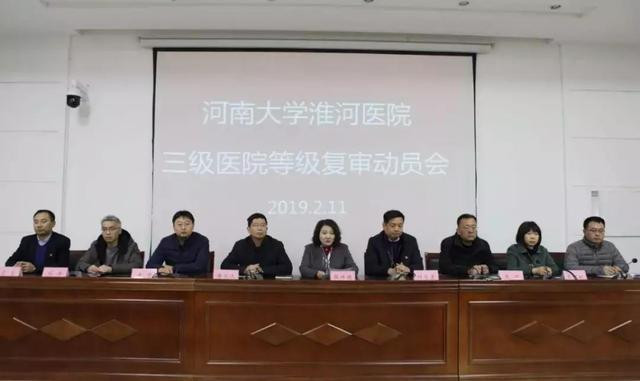

- 中共中央统一战线工作部
- 中共河南省委统战部
- 开封市统战部
- 河南大学
- "河大统战"杂志
张祎捷：医者仁心 止于至善 发布时间：2020-03-10 16:11:26 作者： 医德高尚，救死扶伤 言传身教，推进教改 创新发展，推动科研 高瞻远瞩，擘画蓝图 勇挑重担，抗击疫情

张祎捷，主任医师、教授，硕士生导师，第十二届河南省政协委员，开封市党外知识分子联谊会会长。现任河南大学淮河医院院长。担任中国医师协会河南呼吸医师分会副会长、中华医学会河南呼吸病学分会常务委员、中华医学会开封市内科学分会副主任委员、开封市医学会呼吸专业委员会主任委员等社会职务，开封市新冠肺炎救治专家组组长。从医20多年来，她坚持以病人为中心，以高尚医德践行救死扶伤职责。近年来，她先后荣获河南省“十一五”期间医德医风先进个人、河南省师德标兵、开封市科技拔尖人才、开封市五一劳动奖章、河南省三八红旗手、河南优秀医师奖、河南省卫生教育工作先进个人、河南省科技创新型人才、河南省卫计委“51282”工程领军人才等称号。
既然选择了医生这个职业，帮助病人解除病痛，救死扶伤就是职责所在。在她的时间表里，没有上下班的概念，没有节假日，家里再大的事都无暇顾及。2003年SARS疫情来袭，当时疫情面前，她不顾个人安危，毫不犹豫地听从组织安排，勇敢地冲在了抗击非典的第一线。穿着厚厚的防护服，带着双层防护口罩，每天巡视在被隔离的救治区域，和病人进行零距离接触。结婚纪念日奔赴周口沈丘会诊疑似病人，不知熬过了多少个不眠之夜，拟定了多少个治疗方案，做了多少个案例分析。张祎捷和同事们一起走过了那段艰难地日子，看着病人开心的笑容和领导同事们欣慰的眼神，她更加深刻地体会到了作为医务工作者肩负着的救死扶伤的重大使命。
2013年H7N9禽流感来袭，河南省首例H7N9禽流感重症患者马某从尉氏医院急诊转入河南大学淮河医院，张祎捷第一时间接诊患者。患者入院时病情极其严重，在救治过程中曾多次出现生命体征不稳、心功能衰竭等情况。“生命第一，全力抢救”，为不辜负领导的厚望和患者家属的期盼，她亲自在ICU病房守护病人，每天查房，详细分析病情，制定治疗方案，并经常紧握患者的手，安抚、鼓励患者，给患者传递战胜疾病的信心和力量。连续18天的抢救治疗，她与患者朝夕相处，通过患者的一个手势、一个简单表情，她就能判断出患者想要表达什么意思。就这样，通过一句句问候、一次次握手、一声声鼓励，患者增强了战胜疾病的信心，最终转危为安。中央电视台对此次救治过程也做了深入报道。
张祎捷在做好自己的理论教学和临床带教工作的同时，抽出时间带领教研室人员仔细规划、设计出适合内科教研室的工作方法和管理措施，并组织骨干教师言传身教，加强对学生基本功的训练，使淮河临床学院在教育部教学评估工作中取得了良好的成绩。近几年她多次带队参加全国大学生临床技能大赛，2017年，在全国技能竞赛中取得了华中赛区一等奖、全国总决赛三等奖的好成绩。

为深化教学改革，培养学生创新实践能力，她潜心研究教学方法，大胆进行实验教学改革，锐意进取、不断创新，在长期的实验教学实践中总结出了许多宝贵经验。先后主持并完成了教改项目“改良式PBL”教学模式在呼吸内科学理论教学中的探索与应用、“模拟医学教学在临床学中的应用研究”项目、“加强临床实习基地建设，提高医学生培养质量”项目等。
医学人才的培养是提高医疗卫生服务水平的基础工程，是深化医药卫生体制改革的重要任务，是推进健康中国建设的重要保障。她担任淮河医院院长以来，要求进一步强化教学主体职能，创新医教协同模式，促进理论教学与临床实践的融合。启动课程改革，拟利用大数据进行教学模式改革，推动以“教师为中心”的教学方式向以“学生为中心”教学方式转变。积极推进在线课堂建设，成立“慕课”团队，利用在线课堂为学生提供自主的学习空间，通过教学平台实现师生互动，提供“个性化”授课，真正做到“因材施教”。进一步完善学业评价体系与方法研究。全面开展客观结构化临床考试（OSCE）、微型临床评估演练(Mini CEX）、操作技能直接观察（DQPS）、计算机模拟病例考试（CCS)等。
她主抓的住培工作也是硕果累累。为了发掘住培医师创新能力，调动积极性，提高解决临床问题的能力，她参与主持针对住培医师的改良式“PBL”教学，利于课余时间编写临床案例，引导住培医师提出问题，指导其自主解决临床问题。医院住培基地连续三年被评为河南省住院医师规范化培训工作先进单位；常娜主任被中国医师协会评为“全国优秀基地主任”荣誉称号。2018年医院获批国家普通外科学专科医师培训基地。
张袆捷是个非常善于学习的人， 1986年9月她以优异成绩考入郑州大学临床医学系，1991年7月毕业后就来到了淮河医院，一直工作至今。她常说，作为一名医者工作岗位就是最好的学习平台，在紧张的工作之余，她抓住点滴时间刻苦学习，考取了华中科技大学同济医学院呼吸内科研究生。她不仅重视提高自己的医疗技术水平，也重视科研能力的提升。她研读专业杂志，并认真做读书笔记，至今已完成了几十万字的读书笔记。截止目前，她共发表论文20余篇，主持省部级科研2项，著书2部。
同时作为医院科研工作的管理者，她结合医院实际，带领职能部门人员主持修订和完善了《河南大学淮河医院科技成果奖励办法》，通过对职工科技成果的奖励，极大地调动了全院干部职工的科研工作热情。目前，医院获批科技部及国家自然基金2项、省级各类项目35项，获批市级各类项目14项，创新团队和创新个人各1项；河南省中医药专题项目结项1项；获评河南省教育厅科技成果二等奖1项，并组织申报华夏医学奖5项。发表论文207篇，其中SCI论文140篇。医院学科发展对河南大学ESI临床医学学科2008-2018年世界排名前1％的贡献度全校排名第二，对提升河南大学在世界上的影响力做出了重要贡献。
担任院长后，张袆捷深感责任更加重大，从2018年7月上任以来，她团结领导班子成员，共同谋划医院未来发展思路。开展学科调研，了解掌握各科室发展现状，鼓励各专业开展新技术、新业务提升学习，力争使医院学科水平再上新台阶。
2019年，医院启动了三甲复审工作，她以三甲复审为抓手，全面提升医疗质量和服务水平。成立了医疗质量控制部，进一步加强落实医疗质量安全管理。凝练学科方向，培育高水平成果。出台新政策，加大投入，进一步提高科学研究水平。加强高层次人才引进和培养，积极推进科技创新团队建设。全面开展便民惠民服务，进一步提升了患者的就医体验。
从1951年河大医学院组建医疗队参加抗美援朝、保家卫国,到援疆、援藏、援非,再到抗击非典、抗击H7N9、支援汶川、驰援武汉……河大医学人舍身佑民、勇往直前的社会担当,救死扶伤、秉承仁心仁术的医学精神,在教学科研、临床实践、志愿服务中,生生不息,薪火相传。
面对突如其来的新冠肺炎疫情，张祎捷冷静、无畏，以生命护佑生命的大爱、舍己为人的奉献，快速制定各项应急措施和工作方案，高效展开防控措施和行动，让焦虑不安的社会大众看到了希望，增添了信心！作为呼吸科专家，她被任命为开封市新冠肺炎救治专家组组长。前期她和专家组成员做了大量的工作，成为开封的“钟南山”，成为开封人民的好卫士、好医生。她与专家组成员一起讨论制定了“专家会诊制度和申请流程”“首诊负责制”“确诊病例出院流程”等相关规定。她每天研判周边地区疫情，关注国内疫情防控和诊疗最新进展，每天向疫情防控指挥部汇报救治工作，多次提出建设性意见。除此之外，她还通过多种媒体，做公众疫情防控知识普及，讲解新型冠状病毒感染的肺炎症状及预防措施。她多次召集相关专家反复论证，完善了各个医院的应急预案，并多次组织相关部门和全市8家定点医院开展应急演练。

1月25日，大年初一8点，张祎捷接到通许县人民医院一例发热疑似病人的会诊请求，立即赶赴通许县参与疑似病例会诊，这也是开封市首例确诊患者。在疫情防控期间，张祎捷既要保证淮河医院的正常运转，又要做好广大开封人民的疫情防护工作，每天奔波于医院与会诊途中，每天睡眠不足5小时成为工作常态。正如她自己所说的，“我有‘专业’优势和‘经验’优势，冲在疫情防控最前线是我义不容辞的责任和使命！”1月25日21时许，正在开工作例会的张祎捷接到紧急任务－－组建援助湖北医疗队。时间紧任务重，张祎捷立即通知相关人员到医院集结，不到两个小时，完成了人员报名、成员遴选、队伍组建， 23时，我省第一支援助湖北医疗队淮河医院的26人做好了一切准备，整装待发。
1月26日，看着战友们奔赴武汉抗疫战场，她的心情五味杂陈，一方面是救治患者使命所需，一方面是对同志们的不舍和担心，送别现场，张祎捷院长哭了，而那一抹火红不但是26名驰援武汉队员的信念支撑，也是全院2500名职工的信念支撑，更是成为了面对疫情的危机时刻社会大众的信念支撑。26名队员支援了武汉，把张祎捷的心也带到了武汉，她每天都要和医疗队员在微信群里互动，了解大家的工作和思想动态，关心队员的生活需求，带领员工看望慰问援助医疗队员的家属和奋战在一线的医护人员……

在疫情防控工作中，河南大学淮河医院成为河南省新冠肺炎治疗省定点医院、河南省危重孕产妇定点救治医院，张祎捷带领淮河医院的医务工作者除担任开封地区的患者救治外，还担负起了省里临时下达的各项任务。在这样繁重的工作压力下，在疫情防控的严峻形势下，河南大学淮河医院随后又依然派出业务骨干增援商丘。张祎捷说,“作为有社会责任感的省直三甲医院，我们应该为抗击疫情扛起更大的社会责任；作为医护人员，我们责无旁贷！”
作为一名优秀党外代表人士，张祎捷积极建言献策，仅在疫情防控期间就先后提出了《关于居家隔离观察的建议》《市级新冠肺炎救治专家组工作建议》《“新冠肺炎”重型/危重型病例救治流程》《关于解除医学观察前健康体检的相关规定》《开封市“四类”人员管控流程》《疫情分析与思考》《关于医疗机构为复工企业做好对接服务的建议》等多篇建议，为病患救治、疫情防控发挥了积极作用。
疫情防控是一场没有硝烟的战争，也是一个检验领导干部初心守得牢不牢、使命担得好不好的考场。张祎捷说：“初心使命不是说出来的，而是真刀真枪干出来的。它浸润在明责、履责、尽责中，体现在深入疫情防控最前线中，彰显在取得防疫成效上。”
目前，疫情形势依然严峻。张祎捷与战友们面对疫情迎难而上、逆风飞扬，她将团结和带领河南大学淮河医院全院职工，继续战斗在抗击疫情的最前沿。“疫情面前，我来！”这是张祎捷面对疫情的最深切表达。
大义显大勇，医者皆仁心！树德修身，止于至善！